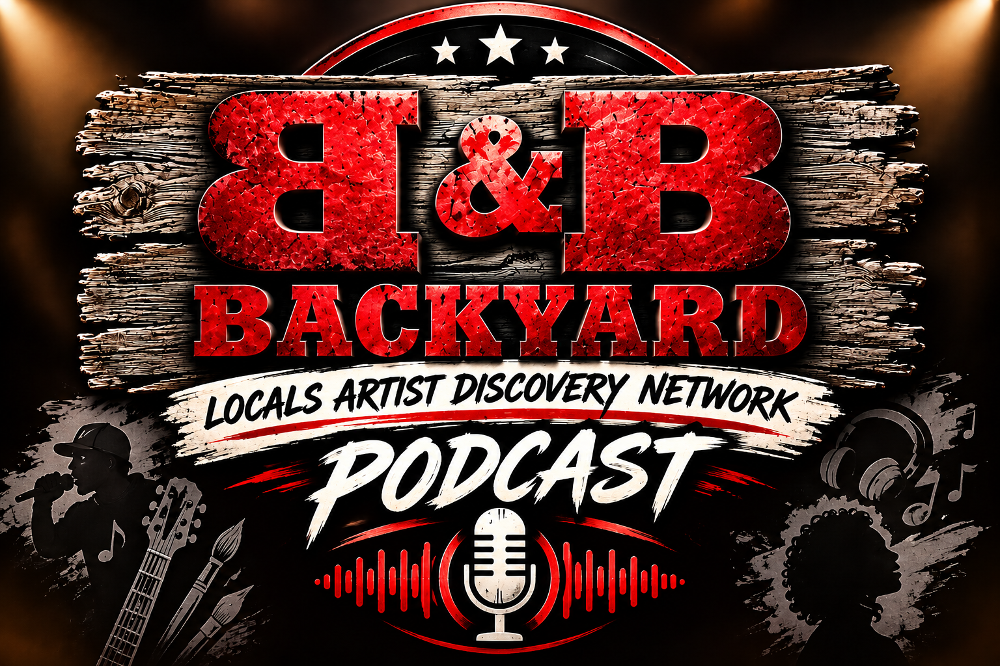

▶
Your newest B&B episode will appear here.
Replace this starter content with your first real episode, or connect the social-feed backend so new releases can populate automatically.
Open Episodes
B&B Backyard Podcast brings local artists, creators, stories and conversations into one place. Watch the newest episode, catch the livestream, discover clips, and follow everything happening across the B&B network.
Replace this starter content with your first real episode, or connect the social-feed backend so new releases can populate automatically.
Open EpisodesOne place for YouTube and future Twitch livestreams.
Visitors can be alerted when your configured social feed reports new content.
YouTube, TikTok, Facebook and Twitch-ready.